![]()
| Breed | Age (Years) | Weight (kg) | Color | Gender | |
|---|---|---|---|---|---|
| 0 | Russian Blue | 19 | 7 | Tortoiseshell | Female |
| 1 | Norwegian Forest | 19 | 9 | Tortoiseshell | Female |
| 2 | Chartreux | 3 | 3 | Brown | Female |
| 3 | Persian | 13 | 6 | Sable | Female |
| 4 | Ragdoll | 10 | 8 | Tabby | Male |
Lecture 1: Data Science Fundamentals
PSTAT100 Data Science Concepts and Analysis
April 7, 2026
Course Introduction
👋 Introduction
Welcome to PSTAT100 Data Science Concepts and Analysis! 🎉
🤝 About Me
- My name is John Inston.
- Pronouns: I use he/him/his pronouns.
- I am a 4th year PhD candidate 👴 in the Department of Statistics and Applied Probability.
- My research interests include stochastic games 🎲 and numerical optimization 💻.

Office Hours
🏢 OH: South Hall 5431T R 1PM to 3PM.
👩🏫 Teaching Staff
I am being assisted this term by the following wonderful teaching assistants:
Lauren Hughes
- Pronouns: she/her/hers
- ✉️ Email: laurenhughes@ucsb.edu
- 🏢 OH: TBD.
Yuting Ma
- Pronouns: she/her/hers
- ✉️ Email: yutingma@ucsb.edu
- 🏢 OH: TBD.
Zhuojun Lyu
- Pronouns: she/her/hers
- ✉️ Email: zhuojun@ucsb.edu
- 🏢 OH: TBD.
❗ Due to space availability section switching must be confirmed in advance with your TA.
ℹ️ Prerequisites
Programming Language
- This course will be taught in
python🐍.- A working knowledge of
pythonis not required but it is expected that you have some familiarity with similar programming languages. - You are also expected to create documents using Jupyter notebooks or Quarto markdown.
- A working knowledge of
Prerequisite Courses
- PSTAT 120A
- Probability Theory
- Statistics
- CS 9 or CS 16
- Python Programming
- Data Structures
- Algorithms
- Math 4A
- Linear Algebra
📝 Supplementary materials summarizing these topics will be made available in the online lecture notes for review.
ℹ️ Course Information
📝 Course Materials
- You will be provided with:
- 📝 Lecture Notes (slides, online, pdf)
- 📚 Suggested reading (textbooks, online notebooks)
- 🧪 Lab and assignment solutions
- You can access all course material through the Canvas page.
- All material that is not assessed will also be made available on the course website.
👩⚖️ Course Policies
Communication is key! 💬
No plagiarism! ❌
🤖 AI tools are encouraged for learning.
Be respectful. 🤝
Please make sure to read through the course policies detailed in the syllabus.
📝 Assessments
📝 Assignments (40%)
- 4 assignments throughout the quarter.
- These will be released and submitted on Canvas
- Due at the end of weeks 2, 4, 6, and 8.
💻 Labs (30%)
- 8 lab worksheets
- Submitted to Canvas by the end of the week.
- In lab sessions your TA will help you with problems.
📊 Project (30%)
- You are required to complete a data analysis project.
- Individual or group.
- Details of this project will be specified in the coming weeks.
✅ Topic Outline
The following is a tentative course outline:
-
Introduction to Data Science
- Python Fundamentals
- Data Lifecycle
-
Data Preparation
- Data Cleaning
- Missingness
-
Exploratory Data Analysis
- Data Visualization
- Data Summarization
-
Statistical Foundations
- Probability
- Hypothesis Testing
-
Regression
- Simple / Multiple Linear Regression
- Ridge / Lasso / Elastic Net Regression
-
Classification Methods
- Logistic Regression
- Support Vector Machines
-
Tree-Based Methods
- Decision Trees / Random Forests
-
Unsupervised Learning
- PCA & Clustering
- Introduction to Deep Learning
-
Data Science Ethics
- Privacy, Fairness and Bias
📈 Maximizing Your Learning
💼 Professional Skills
In addition to technical topics we will also develop your professional skills as a data scientist including:
- Technical document production.
- 🗣️ Precise and clear communication.
- 🤝 Collaboration and team work.
- Version control (GitHub).
- Independent learning.
🎯 Course Aims
Your course aims should be:
- 🛠️ Build a toolkit for your future career.
- Independently learning new tools and techniques based on the problem at hand.
- To have a project to showcase your skills and knowledge for job applications.
- And have the start of a project portfolio on GitHub!
💪 Python Bootcamp
What about if I am not familiar with Python? 🤔

When and Where?
I will be hosting a Python Bootcamp this Thursday from 1:00pm to 3:00pm in South Hall 5421.
❗ Attendance is optional!
Who is this for?
- Encouraged for anybody who is unfamiliar with Python or needs a refresher.
- Focus will be on IDE setup, basic functionality and document creation.
Data Science Fundamentals
📊 Data Science
What is Data Science?
Let’s see what Claude thinks:
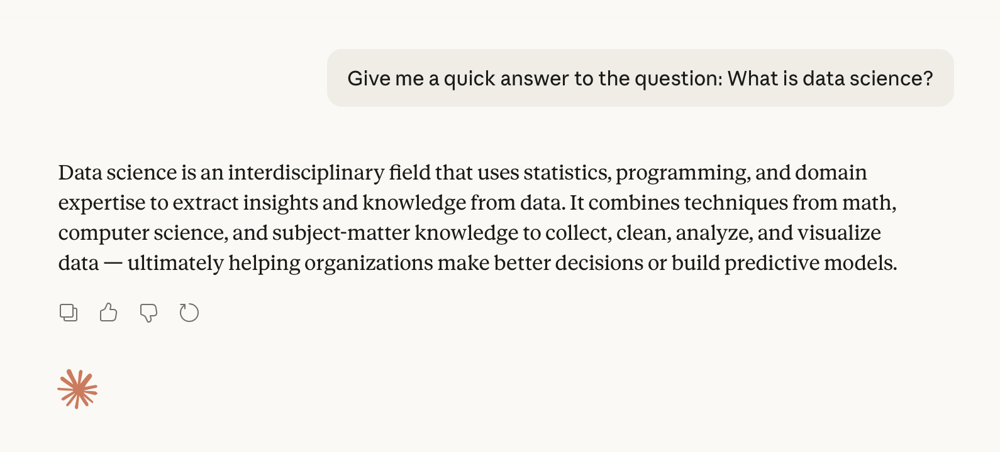
Fundamental Aims
Simply put…
Data science is the practice of using data to extract insights and knowledge. 👍
How does it work?
- Data science is an interdisciplinary field, requiring:
- Statistics
- Mathematics
- Computer science
- Domain knowledge
- Required to manage and interpret large, complicated data sets.

🤔 Notice that these disciplines loosely correspond to the prerequisites for this course.
Data Science Disciplines
Intersection of the Disciplines

Data Science Venn Diagram.
🔢 Data
What is Data?
Definition: Data
Data is (digital) information (such as measurements or statistics) used as a basis for reasoning, discussion, or calculation.
- Raw data is often difficult or even impossible to interpret.
- Hence, the need for Data Science!
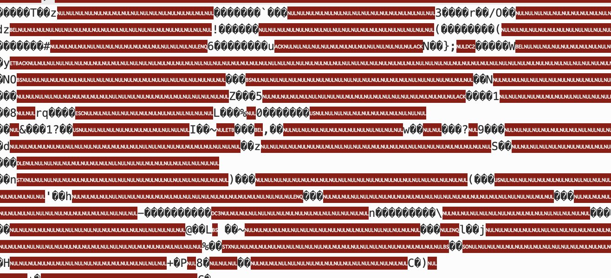
Data Growth
Sooo much data!
The amount of data being collected, stored, and processed is growing exponentially!
Larger variety of increasingly complicated data types.
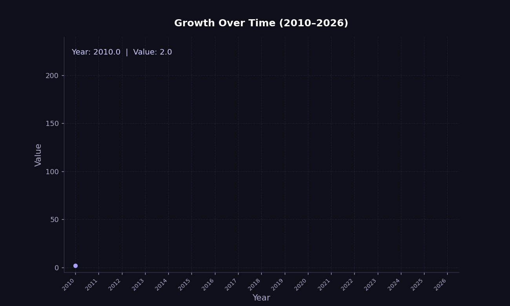
🔢 Datasets
Datasets
Definition: Dataset
A dataset is a collection of observations taken on observational units, consisting of values measured on a set of variables.
Terminology
- An observational unit is the entity that is being measured.
- People in a study, cars on a production line, etc.
- An observation is a collection of values (e.g. a vector) measured on various variables.
- One person, car in particular is an observation.
- Variables might be the person’s age, the car’s engine size, etc.
Let’s look at our first example dataset.
Dataset Example - cats.csv
🐈 A New Cat Dataset
Identifying Observations and Variables
The
catsdataset was provided by Waqar Ali on Kaggle.Here the observational unit is a cat.
This dataset of 1000 observations (rows, individual cats) each with 5 variables (columns).
Semantics vs Structure
What is the difference?
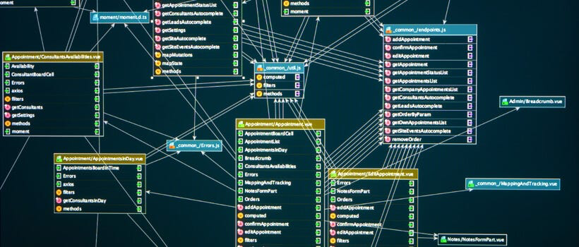
In general, we distinguish between the semantics and structure of a dataset.
The semantics of a dataset refers to the meaning behind the data.
- Interpretation and representation.
The structure of a dataset refers to the way the data is organized.
- Shape, organization and storage.
🔢 Types of Data
🔢 Quantitative Data
- Quantitative Data (Numerical): Represents measurable quantities.
- Discrete: Counted items that are distinct and whole (e.g., number of children, product sales).
- Continuous: Measured items that can be any value within a range (e.g., height, weight).
⚖️ Qualitative Data
- Qualitative Data (Categorical): Represents descriptive characteristics or labels.
- Nominal: Named categories with no inherent order (e.g., gender, hair color, blood type).
- Ordinal: Categories with a logical order or ranking (e.g., satisfaction surveys, education level).
🏢 Structured vs. Unstructured Data
- Structured vs. Unstructured Data:
- Structured: Organized, formatted data (e.g., Excel sheets, SQL databases).
- Unstructured data: Data without a fixed schema (e.g., video, audio, free text).
Data Type Example - cats.csv
🐈 The Cats Strike Back!
| Breed | Age (Years) | Weight (kg) | Color | Gender | |
|---|---|---|---|---|---|
| 0 | Russian Blue | 19 | 7 | Tortoiseshell | Female |
| 1 | Norwegian Forest | 19 | 9 | Tortoiseshell | Female |
| 2 | Chartreux | 3 | 3 | Brown | Female |
| 3 | Persian | 13 | 6 | Sable | Female |
| 4 | Ragdoll | 10 | 8 | Tabby | Male |
Identifying Variable Types
The Breed, Color, and Gender variables are qualitative variables since they are categorical.
The Age and Weight variables are quantitative variables since they are numerical.
- Both are continuous variables since they can take on any value within a range.
- ❗ We note however that they have both been discretized into bins.
🔄 Transformations
Variable Transformations
- Variables can be transformed from one type to another, often for:
- Improved interpretability.
- Removing excessive detail.
- Subsequent analysis (e.g. PCA).
🐈 Return of the Cat Dataset
Suppose we are interested in transforming the quantitative age variable into the categories young, middle-aged, and senior.
- We create a new variable
AgeGroupwith the following values:Young: 0-5 yearsMiddle-Aged: 6-10 yearsSenior: 11+ years
Transformations Example - cats.csv
🐕 Transformed Cat Dataset
| Breed | Age (Years) | Weight (kg) | Color | Gender | AgeGroup | |
|---|---|---|---|---|---|---|
| 0 | Russian Blue | 19 | 7 | Tortoiseshell | Female | Senior |
| 1 | Norwegian Forest | 19 | 9 | Tortoiseshell | Female | Senior |
| 2 | Chartreux | 3 | 3 | Brown | Female | Young |
| 3 | Persian | 13 | 6 | Sable | Female | Senior |
| 4 | Ragdoll | 10 | 8 | Tabby | Male | Middle-Aged |
Interpretation of the Transformed Variable
We have now transformed the numerical
Age (Years)variable into a qualitativeAgeGroupvariable.We will revisit variable transformations in more detail later in the course when we discuss data preparation.
Data Type Hierarchy
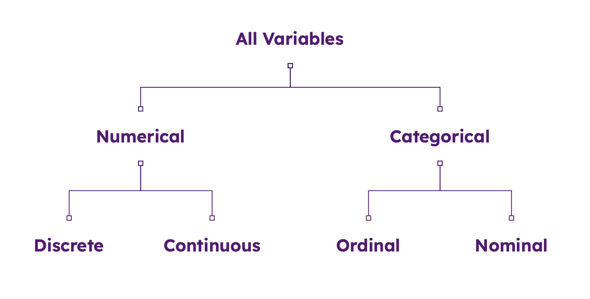
🔢 Tabular Data
- We will primarily be working with tabular data.
- Spreadsheet style datasets containing both quantitative and qualitative data.
- We will occasionally deal with more complex structures such as databases.
Complicated Data
😵💫 More Complicated Data Types
In reality there is a wide variety of different data types:
- Time series data - stock prices, weather patterns, etc.
- Spatial data - map data, satellite imagery, etc.
- Textual data - social media posts, news articles, etc.
- Image data - photos, videos, etc.
- Audio data - audio recordings, podcasts, etc.
- Video data - videos, etc.
- Network / graphical data - social media networks, etc.
Each data type has its own unique set of challenges and techniques for data scientists to apply.
Complicated Data Example - MNIST
🖐️ Handwritten Digits
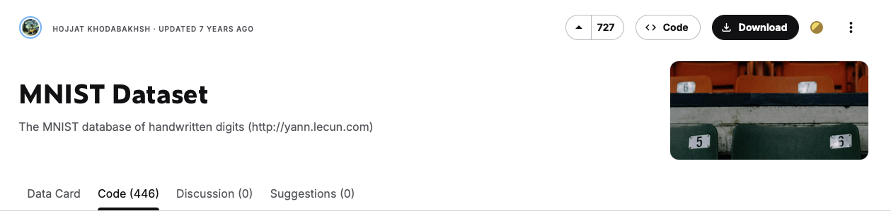
MNIST database, a subset of the larger NIST made available by Yann LeCun on Kaggle.
- The database is of handwritten digits.
- White text on a black background.
- The data is complicated!
- There are 70,000 observations total (60,000 training and 10,000 testing).
- Each observation consists of 28x28 pixels, with a total of 784 pixels per observation.
- Each pixel is a grayscale value between 0 and 255 (0 = black, 255 = white).
Handwritten Digits
🖐️ Handwritten Digits
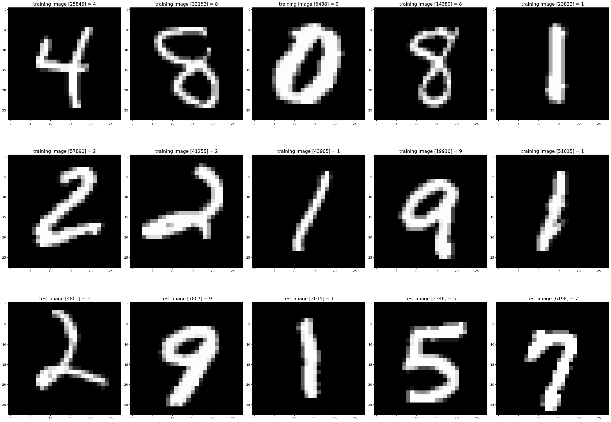
MNIST Data Visualization.
📖 Data Literacy
My point is…
The world of data is confusing! 😵💫
- Different data types with different formats and different dimensions.
- Each has unique challenges and techniques for data scientists to learn.
- We do not have time to go over everything, but we will cover some of the most important cases!
- It is a long road to build up your data literacy.
Definition: Data Literacy
Data Literacy is the ability to explore, understand, and communicate with data in a meaningful way. (Tableau)
Data Science Lifecycle
🔄 Data Science Lifecycle
What is the Data Science Lifecycle?
The data science lifecycle (DLS) is the following multi-step process used to extract actionable insights from data:
- ❓ Hypothesize:
- Formulate a question of interest.
- 🧹 Collect and Prepare:
- Sample or acquire data.
- Understand your dataset (origins, limits).
- Clean up and organize your data.
- 📈 Explore and Analyze:
- Explore the data to understand its structure.
- Analyze data relationships.
- 🗣️ Interpret and Communicate:
- Interpret the results of the analysis.
- Communicate your results.
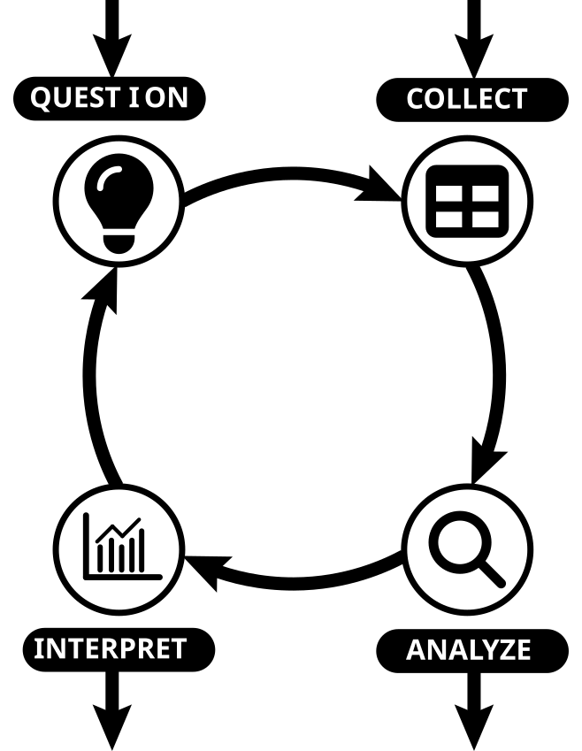
Guidelines
Don’t feel restricted!
- This lifecycle is not necessarily sequential.
- You may start with a data set that needs processing before forming your hypothesis.
- You may need to reformulate your hypothesis as your understanding deepens.
- Think of this as a guide to help structure your approach.
In reality, the data science lifecycle has a more complex structure.
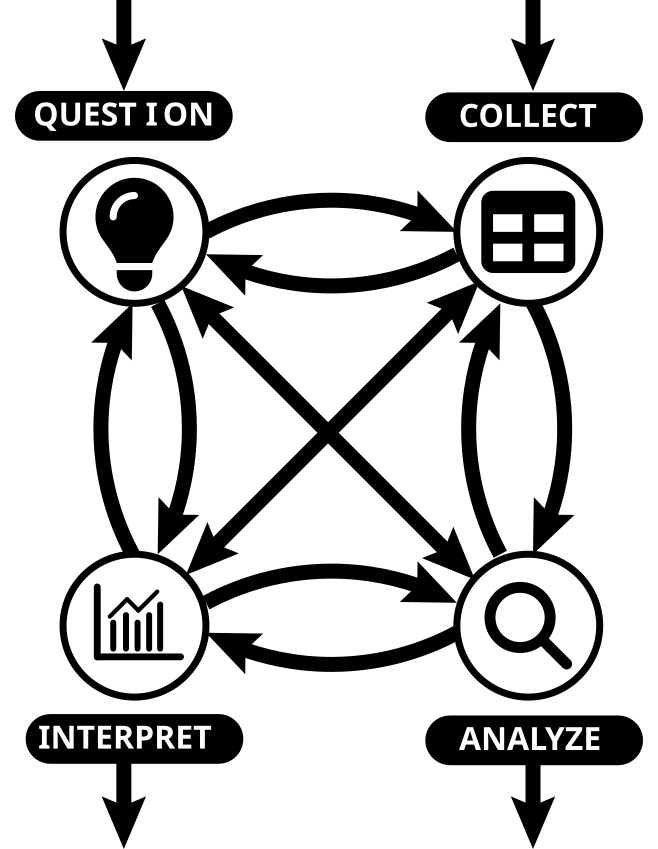
❓ Hypothesize
Deceptively Simple
- Typically we begin with a question we want to answer.
- 💉 Does this new drug improve patient outcomes?
- 🛳️ What impact has increased shipping had on marine mammal populations?
- 🎓 Does this new policy improve student performance?
- The scope of your hypothesis should inform the data you collect.
- Am I considering a specific population?
- Do I wish to generalize?
- Does this data already exist?
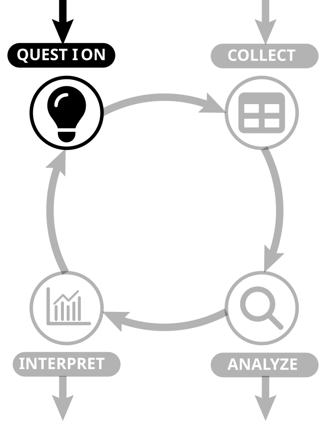
🧹 Collect and Prepare
This takes time!
- Design experiment / survey or collect second-hand data.
- There are whole courses dedicated to experimental design.
- ➡️ Our hypothesis informs the data we collect.
- ⬅️ With second-hand data, this is often reversed.
- 🧹 Data preparation is often a time consuming process.
- Errors are challenging to locate.
- Missing data needs to be handled appropriately.
- Formatting and readability issues.
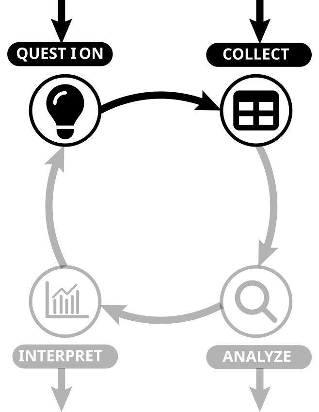
📈 Explore and Analyze
Understanding the data
- Analyze the data to understand its structure.
- Visualizations.
- Descriptive statistics.
- Identify relationships between variables.
- Inferential modelling.
- Hypothesis testing.
- Sometimes we wish to forecast future outcomes.
- Predictive modelling.
- Sometimes we solely focus on model outcomes.
- Model selection and evaluation.
- Machine learning models.
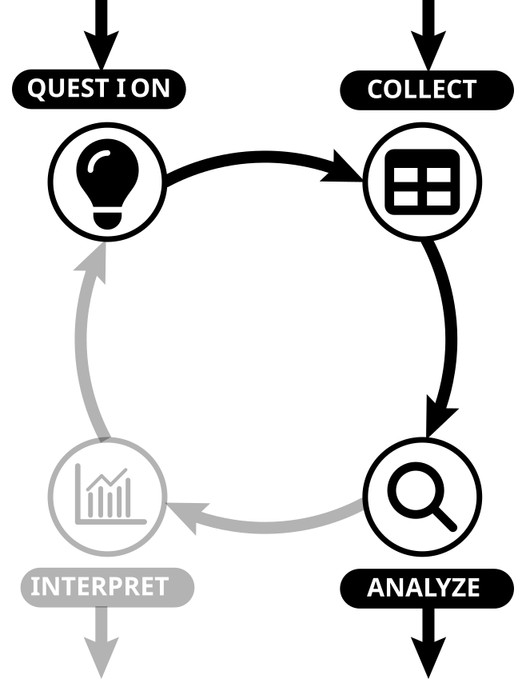
🗣️ Interpret and Communicate
Refer back to your hypothesis
- Interpret our results.
- How do our results fit our hypothesis?
- How significant are our results?
- How do our results compare to other studies?
- Communicate our results.
- Write a report.
- Present your findings.
- Ensure reproducibility.
- Share your code and data.
- Maximize transparency.
- Let’s look at an example…
DSL Example - mammals.csv
mammals.csv
Suppose we are provided with the following data set:
| species | body_weight | brain_weight | slow_wave | paradox | total_sleep | lifespan | gestation | predation | exposure | danger | |
|---|---|---|---|---|---|---|---|---|---|---|---|
| 0 | African elephant | 6654.000 | 5712.0 | NaN | NaN | 3.3 | 38.6 | 645.0 | 3 | 5 | 3 |
| 1 | African giant pouched rat | 1.000 | 6.6 | 6.3 | 2.0 | 8.3 | 4.5 | 42.0 | 3 | 1 | 3 |
| 2 | Arctic fox | 3.385 | 44.5 | NaN | NaN | 12.5 | 14.0 | 60.0 | 1 | 1 | 1 |
| 3 | Arctic ground squirrel | 0.920 | 5.7 | NaN | NaN | 16.5 | NaN | 25.0 | 5 | 2 | 3 |
| 4 | Asian elephant | 2547.000 | 4603.0 | 2.1 | 1.8 | 3.9 | 69.0 | 624.0 | 3 | 5 | 4 |
- The
mammals.csvdata set (web source) comes from Allison and Cicchetti (1976) and contains data for 62 mammals. - What questions might we be able to answer with this data?
Suppose we are interested in how the size of an animal’s brain scales with their body size.
DSL Example - Prepare
Data Cleaning
- The data is already immaculately cleaned and organized.
- We therefore check the dimensions and inspect the data for any missing values.
Dimensions:
(62, 11)
Missingness analysis:
species 0
body_weight 0
brain_weight 0
slow_wave 14
paradox 12
total_sleep 4
lifespan 4
gestation 4
predation 0
exposure 0
danger 0
dtype: int64DSL Example - Hypothesize
Make sure we understand our limitations!
- We need to understand the limitations of the data.
- The data only contains mammals.
- The data is aggregated at the species level.
- The data was not collected to represent mammals as a whole.
- What does this mean?
- We cannot generalize our findings to all mammals.
- How does this impact the questions we can ask?
Final Hypothesis
Does this data suggest evidence of a relationship between a mammal’s brain size and body weight?
DSL Example - Explore
Summarizing the data
- Both variables are quantitative and continuous.
- We can therefore use descriptive statistics to summarize the data (more on this later).
Summary statistics:
body_weight brain_weight
count 62.000000 62.000000
mean 198.789984 283.134194
std 899.158011 930.278942
min 0.005000 0.140000
25% 0.600000 4.250000
50% 3.342500 17.250000
75% 48.202500 166.000000
max 6654.000000 5712.000000
Correlation:
body_weight brain_weight
body_weight 1.000000 0.934164
brain_weight 0.934164 1.000000- Some observations:
- Correlation is high suggesting a positive relationship between the variables.
- Data appears heavily skewed (we will discuss this later).
- We can also produce a scatter plot to visualize the relationship between the variables.
DSL Example - Visualize
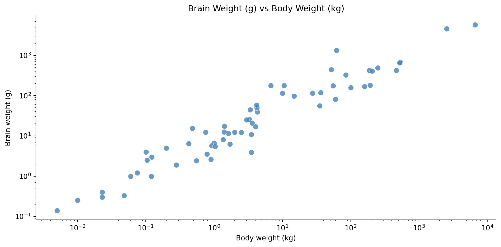
- There is a clear linear relationship between the variables on the log scale.
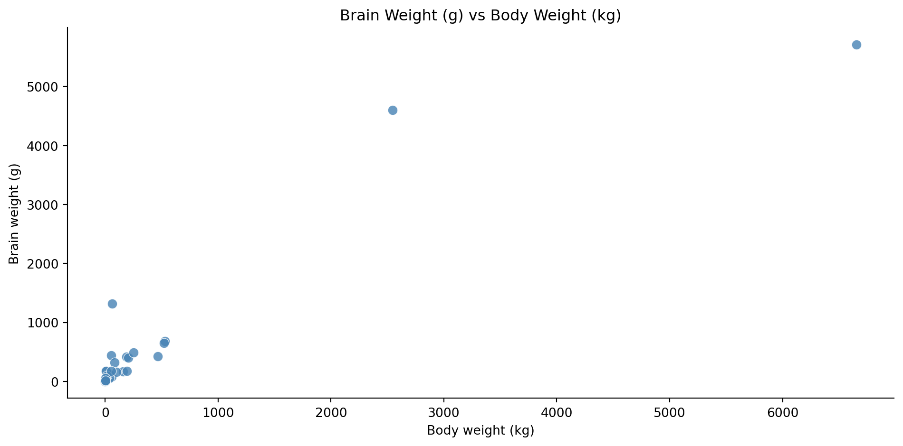
- The plot shows a positive relationship between the variables.
- To better see the relationship, we can use log-log axes.
DSL Example - Analyze
Linear Model
Our visualization suggests that the relationship could be modeled as
\[ \begin{aligned} \log(\text{brain}) & = \beta_0 + \beta_1 \log(\text{body})\\ \text{brain} & = \exp(\beta_0 + \beta_1 \log(\text{body})) \\ \text{brain} & = c\cdot\exp(\log(\text{body}^{\beta_1})) \\ \implies \text{brain} & \propto \text{body}^{\beta_1}. \end{aligned} \]
This suggests that the relationship is a power law.
- To determine the parameters of the model, we can use linear regression.
- We will discuss this in more detail later.
- Let’s have a quick look at the fitted model details.
DSL Example - Model
OLS Regression Results
================================================================================
Dep. Variable: np.log(brain_weight) R-squared: 0.921
Model: OLS Adj. R-squared: 0.919
Method: Least Squares F-statistic: 697.4
Date: Tue, 07 Apr 2026 Prob (F-statistic): 9.84e-35
Time: 22:12:32 Log-Likelihood: -64.336
No. Observations: 62 AIC: 132.7
Df Residuals: 60 BIC: 136.9
Df Model: 1
Covariance Type: nonrobust
=======================================================================================
coef std err t P>|t| [0.025 0.975]
---------------------------------------------------------------------------------------
Intercept 2.1348 0.096 22.227 0.000 1.943 2.327
np.log(body_weight) 0.7517 0.028 26.409 0.000 0.695 0.809
==============================================================================
Omnibus: 2.698 Durbin-Watson: 1.667
Prob(Omnibus): 0.260 Jarque-Bera (JB): 1.933
Skew: 0.405 Prob(JB): 0.380
Kurtosis: 3.301 Cond. No. 3.73
==============================================================================
Notes:
[1] Standard Errors assume that the covariance matrix of the errors is correctly specified.- R-squared = 0.921 — \(\log(\text{body weight})\) explains 92.1% of the variance in \(\log(\text{brain weight})\).
- F-statistic p-value = 9.84e-35 — the model is highly statistically significant overall.
- Slope = 0.7517
- p-values of 0.000, so highly significant.
DSL Example - Interpret
Our fitted model is:
\[ \text{brain} \propto \text{body}^{0.7517}. \]
This means that a 1% increase in body weight is associated with a ~0.75% increase in brain weight.
This leads us to draw the following conclusion:
For these 62 mammals there is evidence that brain weight changes in proportion to a power of body weight.
- Note that this conclusion is not very strong since:
- Data set is relatively small.
- Not representative of mammals in general.
- Aggregated data, not individual level.
Conclusion
Conclusion
✅ What we covered
- Course information.
- What is data science?
- Data and Datasets
- Key terminology.
- Data types.
- The data science lifecycle.
📅 What’s next?
- Handling data in Python.
- Data structure.
- Data preparation.
References
Allison, T., and D. V. Cicchetti. 1976. “Sleep in Mammals: Ecological and Constitutional Correlates.” Science 194 (4266): 732–34. https://doi.org/10.1126/science.982039.